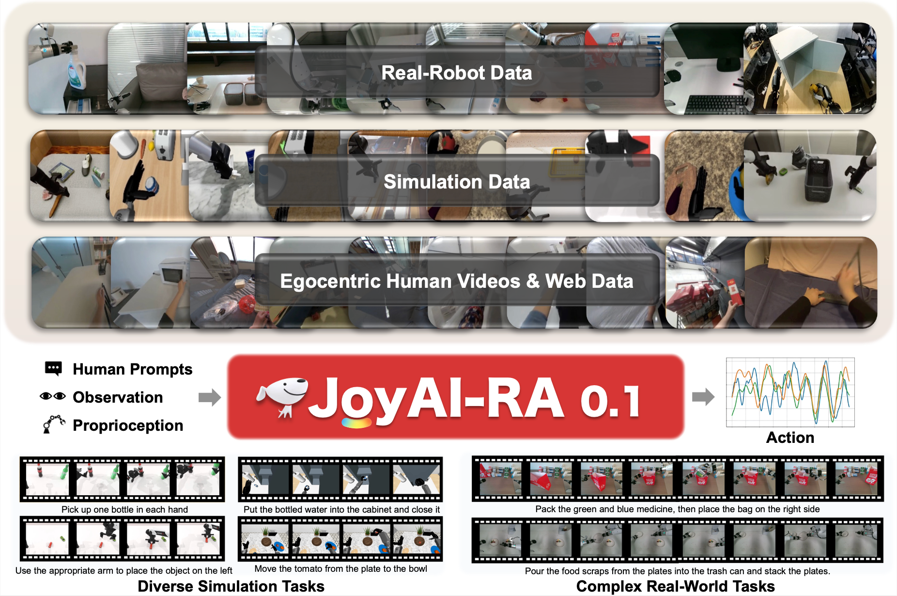
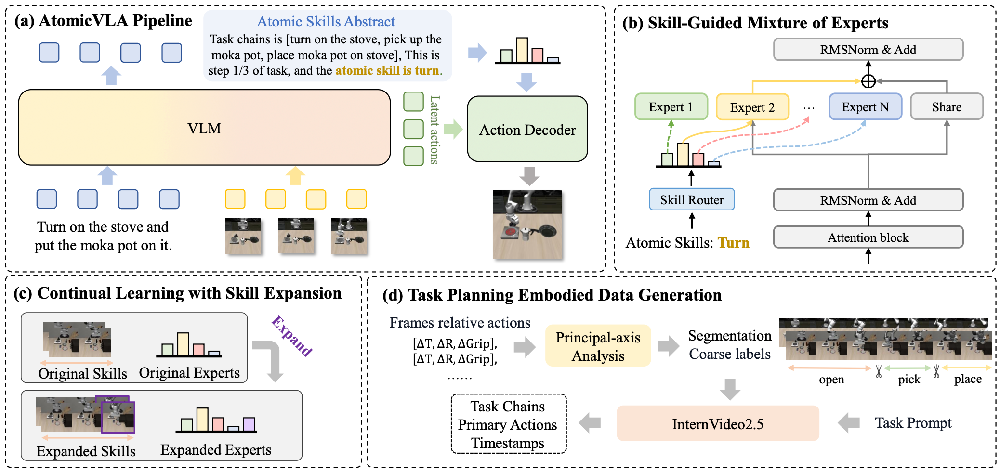
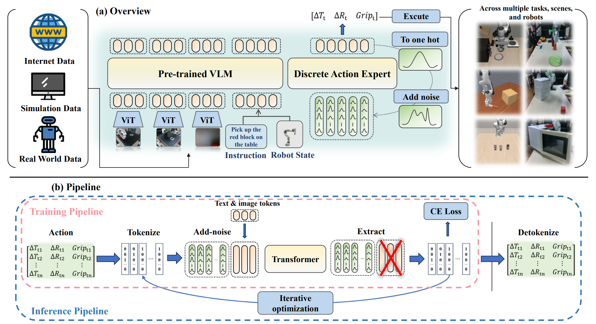
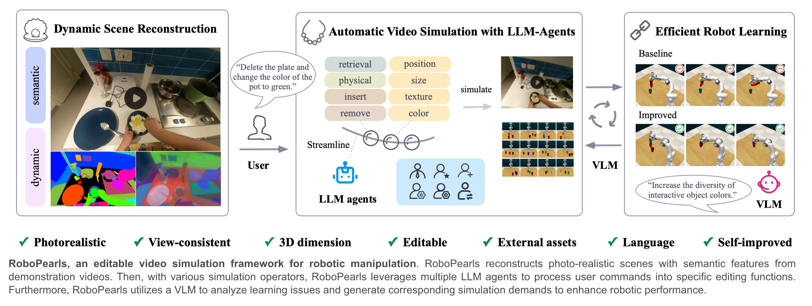
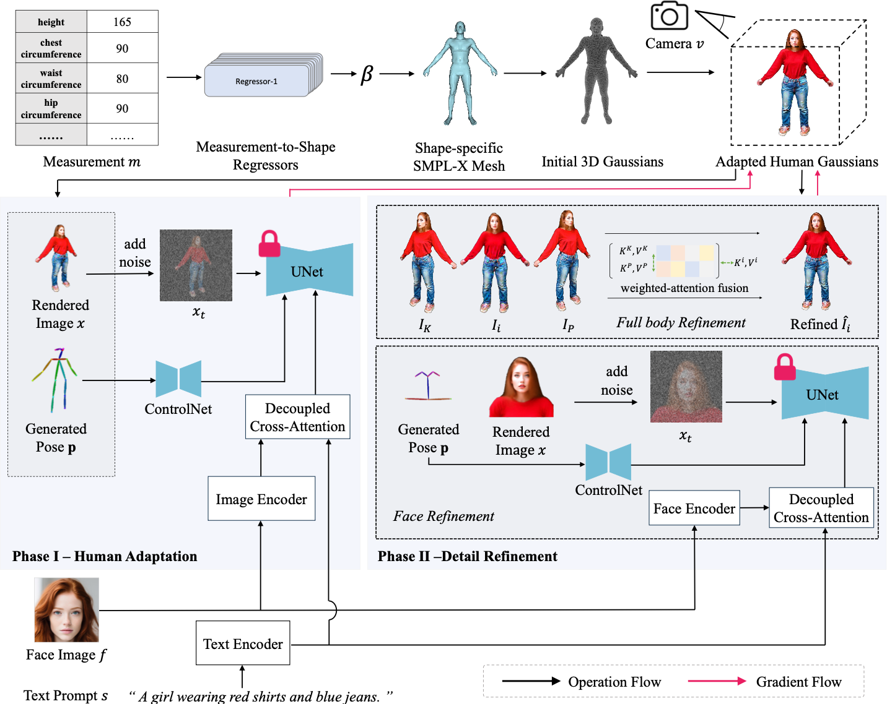
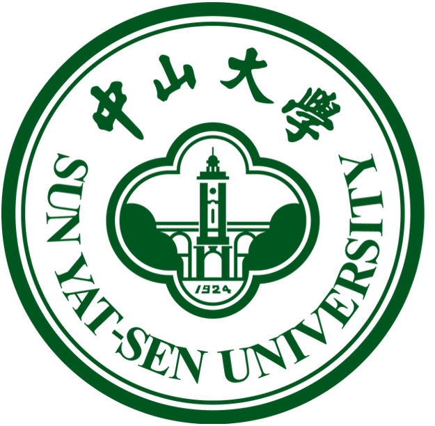

I am Likui Zhang (张立魁), a Ph.D. student (combined Master-Ph.D. program) at the School of Computer Science, Sun Yat-sen University, advised by Prof. Liang Lin and Prof. Xiaodan Liang in HCP Lab. Previously, I received my B.Eng. in Intelligent Science and Technology from Sun Yat-sen University (School of Intelligent Engineering).
My research focuses on Embodied AI and 3D Vision, specifically on data simulation, Vision-Language-Action (VLA) models, World Models(WM) and 3D Gaussian Splatting. I am open to research collaborations and discussions. Feel free to reach out via email: zhanglk9@mail2.sysu.edu.cn.
🔥 News
- 2026.05 🔥 Released JoyAI-RA 0.1, a foundation model for robotic autonomy (JD Explore Academy).
- 2026.02 🎉 AtomicVLA accepted to CVPR 2026!
- 2025.06 🎉 RoboPearls accepted to ICCV 2025!
📝 Publications

JoyAI-RA 0.1: A Foundation Model for Robotic Autonomy
Core Contributor, Technical Report
TL;DR: A foundation model for robotic autonomy developed at JD Explore Academy, covering architecture design, action head design, VLM-subtask planning, and RFT training.

AtomicVLA: Unlocking the Potential of Atomic Skill Learning in Robots
First Author, CVPR 2026
TL;DR: A unified planning-and-execution VLA framework with Skill-Guided Mixture-of-Experts that unlocks atomic skill learning, achieving 10% improvement on LIBERO-LONG and 18.3% on real-world long-horizon tasks.

E0: Enhancing Generalization and Fine-Grained Control in VLA Models via Tweedie Discrete Diffusion
Under Review
TL;DR: A VLA model using tweedie discrete diffusion that formulates action generation as iterative denoising over quantized action tokens, achieving state-of-the-art across 14 environments with 10.7% average improvement.

RoboPearls: Editable Video Simulation for Robot Manipulation
Co-first Author, ICCV 2025
TL;DR: A semantically enhanced editable 4DGS simulation framework for high-quality controllable robot manipulation video simulation, enabling automated video generation via natural language instructions.

Human-Adapter: Personalized Multimodal 3D Human Generation with Gaussian Splatting
First Author, Under Review
TL;DR: A 3D human generation model that produces high-fidelity personalized 3D humans from a single face image, body parameters, and text description via adaptive Decoupled Cross-Attention and two-stage detail optimization.
📖 Educations
-
2024.09 - 2029.06

Ph.D. in Computer Science and Technology, Sun Yat-sen University, Guangzhou.
School of Computer Science | Advisors: Prof. Liang Lin & Prof. Xiaodan Liang
Research: Embodied AI, Simulation Reconstruction, VLA Models -
2020.09 - 2024.06B.Eng. in Intelligent Science and Technology, Sun Yat-sen University, Shenzhen.
School of Intelligent Engineering
National Encouragement Scholarship, University Second-class Scholarship
💻 Internships
-
2025.12 - 2026.05Embodied AI Algorithm Intern, JD Explore Academy, Beijing.
Embodied Foundation Model Department — Designed JoyAI-RA 0.1 architecture, RFT training, and AtomicRL framework for long-horizon tasks. -
2025.08 - 2025.12AI Algorithm Intern, Huawei IAS BU (2030 Lab), Shenzhen.
R&D Management Department — Designed AtomicVLA framework and contributed to multimodal model EVA with D-GSPO training.
🏆 Awards & Patents
- National 2nd Prize, "XingZhi Cup" National AI Innovation Application Competition (Autonomous Driving Trajectory Prediction Track)
- Provincial 1st Prize, 27th China Robotics and Artificial Intelligence Competition
- National Invention Patent (under substantive examination): An Editable Robot Manipulation Simulation System and Method